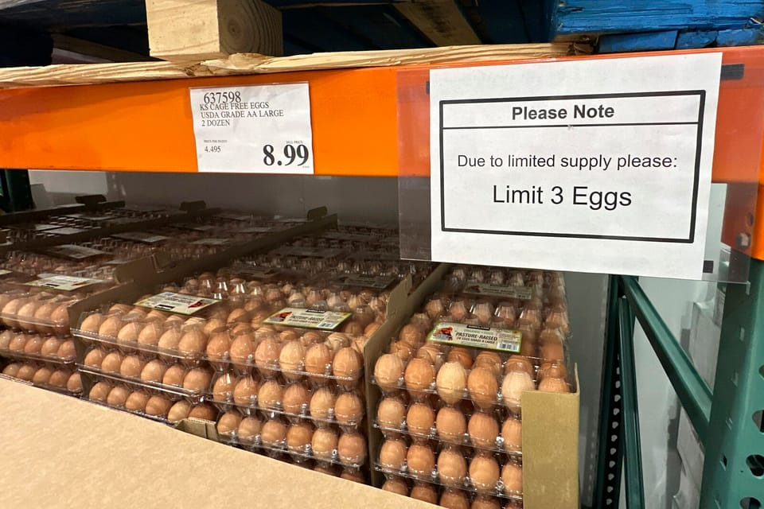

世界苦茶03月15日新闻 | 55条 | 中国批评李嘉诚出卖国家

中国批评李嘉诚出卖国家 | 特朗普削减美国之音自由亚洲的支持机构 | DeepSeek受到政府严密保护甚至限制 | 日本工会春季谈判再创30年工资涨幅新高 | 美参议院轻松通过共和党预算案民主党合作瓦解
老中世界祛魅
苦茶数据
美元兑人民币：7.23（昨日7.24，前日7.24）
美元兑日元：148.64（昨日148.56，前日147.59）
上证指数：休市（昨日3419，前日3420）
标普500指数：休市（昨日5638，前日5521）
比特币：84325（昨日81975，前日82961）
布伦特原油：70.58（昨日70.33，前日70.78）
中国新闻
• 中国铁路客流创新高，前两月超7亿人次 ：今年前两个月，中国铁路发送旅客逾7亿人次，客流量写下历史同期新高。新华社星期五引述中国国家铁路局消息报道，今年前两个月，全国铁路发送旅客7.38亿人次，同比增长6.4%，其中动车组发送旅客5.44亿人次，占全国铁路旅客发送量的73.8%，同比增长5.9%。
• 香港前两月访港旅客840万，增长7% ：香港官方数据显示，今年前两个月到访香港的旅客人次达840万，同比增长7%。据《星岛日报》报道，香港旅发局星期五公布的数据显示，2025年前两个月访港旅客人次840万，同比增长7%。根据数据，大陆市场表现平稳，前两个月访港人次650万，同比增长4%。非大陆市场则延续增长势头，前两个月访港人次逾191万，同比增长20%。
• 上海市委书记调研高科技企业，促创新发展 ：中共上海市委书记陈吉宁调研高科技企业，冀望更多高增长企业在事关未来发展的新领域和新赛道上跑出加速度、抢占最前沿。据微信公众号“上海发布”消息，陈吉宁星期四在高科技企业开展专题调研，听取企业意见建议。他说，要聚力营造市场化、法治化、国际化一流营商环境，加力提升为企服务和惠企政策的针对性有效性，支持更多高增长企业在创新生态和产业生态构建上充分发挥龙头牵引作用，在事关未来发展的新领域新赛道跑出加速度、抢占最前沿。
• 中国籍教授失踪一年后返回日本 ：一名在日本神户学院大学执教的中国籍教授回国失踪一年多后，已返回日本。综合法新社和日本共同社报道，胡士云是日本西部神户学院大学的教授，专攻中国文学与语言学。他在2023年夏天返回中国后失踪，怀疑被中国当局拘留。神户学院大学发言人高村洋一星期五告诉法新社，胡士云的家人于2023年9月向学校通报，他自从2023年8月前往中国后，便与家人失去联系。
• 中国否认建造核动力航母，驳斥美媒报道 ：美国媒体本月初报道指中国准备建造一艘巨型核动力航空母舰，可与美国最大艘航空母舰相媲美。中国国防部星期五反驳有关报道纯属猜测。中国国防部新闻发言人张晓刚星期五在官网以答记者问的形式，就近期涉军问题发布消息。针对美国称中国可能正在建造大型核动力航母，与美军航母吨位相当，张晓刚回应称媒体有关报道纯属猜测。
• 美国驻华大使未定，临时代办将接掌事务 ：在美国驻华大使人选珀杜等待参议院确认任命期间，美国国务院将任命一名高级外交官掌管驻华使领馆事务。美国国务院发言人星期四告诉路透社，现任美国在台协会政治组组长武安妮将担任美国驻华大使馆临时代办，领导美国驻华使团，直至参议院确认大使的任命。目前尚不清楚武安妮将在何时上任。
• 上海东方网原总裁徐世平受贿案判18年 ：中国上海东方网股份公司原总裁、总编辑徐世平涉嫌受贿、挪用公款，星期四被上海法院一审判处有期徒刑18年，并处罚金300万元人民币。据新华社报道，上海市中级法院星期四公开宣判徐世平受贿、挪用公款案件，对徐世平犯受贿罪判刑13年；犯挪用公款罪判处有期徒刑10年。
• 中国人大座谈会：推进“以法惩独”措施 ：中国全国人大常委会委员长赵乐际在反分裂国家法实施20周年座谈会上说，北京进一步丰富完善“以法惩独”的制度体系；在一中原则上发展对外关系；出台追究台独分裂行为刑事责任的司法文件，“公布台独顽固分子名单”，持续丰富打击台独法律工具箱。中国大陆星期五在北京人民大会堂举行《反分裂国家法》实施20周年座谈会。出席的中共高层包括中国全国人大委员长赵乐际、副委员长李鸿忠、中共中央外事办主任王毅、中共中央统战部长石泰峰、中共中央军委联合参谋部参谋长刘振立、公安部长王小洪等。
• 黎智英之子赴美寻求特朗普政府援助 ：本周，遭监禁的民主派出版商黎智英之子寻求华盛顿特朗普政府帮助其父亲获释。在总统唐纳德·特朗普第二个任期开始近两个月后，黎智英之子黎崇恩及其国际法律团队来到华盛顿，会见特朗普行政当局官员和国会议员，希望美国能够帮助推动黎智英获释。黎智英是一名商人，也是现已停刊的香港《苹果日报》的创办人。他被控违反北京实施的国家安全法，罪名包括勾结外国势力和煽动叛乱。他否认所有指控，但如果在正在进行的审判中被定罪，可能面临终身监禁。“我们非常感激特朗普总统表示愿意帮助释放我父亲。这给了我们全家很大的希望。”塞巴斯蒂安在星期三卡托研究所举办的活动上表示。
• 解放军南部战区海军的一架战斗机在训练时失事，飞行员成功跳伞： 战机坠毁于海南省临高县加来镇附近空地，未造成地面附带损伤。南部战区海军正进行事故善后处置，事故原因有待进一步调查核实。
• 中共港澳办3月13日转载《大公报》署名为王俊熙的评论文章《锐评/莫天真 勿糊涂》批评李嘉诚出售巴拿马港口： 文章说，长江和记公司向美资出售巴拿马运河港口、和记港口集团资产，是美国通过胁迫施压利诱手段侵吞他国正当权益的霸权行径；网友普遍批评，长和公司是没有腰骨的跪低，唯利是图、见利忘义，漠视国家利益、民族大义，背叛和出卖全体中国人；有关企业面对如此大事大义大节，要好好想想自己要站在什么立场、站在哪一边。 （翻评：特朗普说因为港口是中资控股，所以是中国政府控制了巴拿马运河，其实这种鬼话我是不信的，长和是私营公司，在全世界运营不少港口业务。但这篇文章一出，你说我该信不该？）
亚太印太新闻
• 台北市政府担忧两岸交流受影响： 台湾总统赖清德星期四在国安高层会议后的记者会上，将中国大陆定调为境外敌对势力。台北市政府担心，这将影响该市今年与大陆的交流。台湾《联合报》报道，台湾政府的大陆委员会强势封杀去年在台北市举行的双城论坛，如今总统赖清德对大陆的定调，让台北市政府担心，今年的双城论坛恐将受到影响。台北市政府人士称，执政的民进党如果乐见两岸城市之间有良性互动，就会支持双城论坛；但如果要反对，可以拿出任何理由阻挡，“中央政府已经没有惯例可言”。
• 台湾在野党人士传被调查，检方否认 ：台湾在野的国民党立法院党团总召傅崐萁传出在花莲的住家被搜，但台北地检署否认这一消息。综合台湾《联合报》、民视新闻网和知新闻等报道，星期五早上传出台北地检署指挥调查局搜索傅崐萁和花莲县长徐榛蔚位于花莲的住家，并传出一名与傅崐萁关系密切的李姓男子被带走。全案缘由今年2月傅崐萁被指控曾通过花莲的“战天下”公司，向蓝营40名立委候选人提供帽子等竞选小物，以换取他们支持傅崐萁竞选立法院长，且经费来源可能来自中国大陆，涉嫌违反商业会计法、反渗透法等。
• 台湾修正《军事审判法》，国民党表态支持 ：台湾总统赖清德宣布修正《军事审判法》后，在野的国民党主席朱立伦说，国民党坚定支持军事审判健全化。综合台湾《联合报》《中国时报》报道，朱立伦星期五说，国民党立委徐巧芯、陈永康及翁晓玲曾在2024年主张修正《军事审判法》，旨在健全军事审判符合战时特殊情况。他说，尽管国民党坚定支持军事审判健全化，但绝不认同赖清德将修法理由指向台军。赖清德称修法是因应中国大陆对台军渗透，无疑是指控台军被中国大陆渗透，“对内寻找敌人”，逃避历史责任。
• 台湾民调显示，多数人反对在野党冻结预算 ：政治立场亲绿的台湾民调显示，过半台湾民众认为在野党过度删减与冻结今年度中央政府总预算。综合台湾《联合报》《中国时报》报道，台湾民意基金会星期五公布的最新民调显示，对于在野党大幅删减与冻结今年度中央政府总预算，仅二成八民众觉得适当，五成三觉得不适当。若与政党支持倾向交叉分析，民进党支持者仅4.6%认为适当，八成八认为不适当；国民党支持者五成七认为适当，二成四认为不适当；民众党支持者六成六认为适当，二成认为不适当；中性选民一成九认为适当，三成九认为不适当，四成二没意见、不知道。
• 越南判处八人监禁，涉及公寓楼火灾事故 ：2023年河内一栋公寓楼发生火灾，造成56人死亡，越南一家法院星期五判处八人入狱。那是越南20年来最严重的火灾。失火的建筑物只有一个出口，外面没有紧急梯子。邻居和居民报告说，人们挣扎着从铁栏杆遮住的窗户逃出火海。法新社引述河内法院的判决书说，这栋九层楼高的公寓楼的业主严光必须因2023年9月发生的火灾受到“最严厉的惩罚”，法院裁决他违反消防法规，判处他12年监禁。判决书称，严光明的行为“非常危险”，“对人员生命和物质损失造成了特别严重的后果”。
• 国际刑事法院审理杜特尔特反人类罪案 ：国际刑事法院于星期五晚上10时，就菲律宾前总统杜特尔特的反人类罪诉讼举行首场庭审。杜特尔特没有亲自到场，而是以视频方式出庭。路透社报道，本案主审法官莫托克告诉法庭，杜特尔特从菲律宾飞到荷兰后感到疲惫，因此获准通过视频连线参加庭审。报道称，杜特尔特在视频中身穿蓝色西装，打着领带，看起来十分虚弱。他向法庭确认了自己的身份和年龄。庭审期间，法庭预计会问及他的健康状况和拘留条件。杜特尔特曾透露自己患有慢性神经肌肉疾病，背部也有问题，还有偏头痛和可能导致血管堵塞的疾病。
• 联合国粮食署削减对缅甸援助，资金短缺 ：由于资金严重短缺，联合国粮食计划署被迫切断对缅甸100万人的重要粮食援助。法新社报道，世界粮食计划署星期五在一份声明中说：“由于资金严重短缺，从4月开始，缅甸100多万人将无法获得计划署的救命粮食援助。”声明称，冲突加剧、流离失所和准入限制等因素，大幅推高缅甸粮食援助需求。如果无法立即获得新的资金，世界粮食计划署只能帮助属于最脆弱群体的3万5000人，包括五岁以下儿童、孕妇和哺乳期妇女，以及残疾人士。
• 缅军士兵遭袭逃往泰国，获人道援助 ：泰国军方称，一批缅甸军队士兵在遭到少数民族武装组织袭击后，越境逃往泰国，已得到人道主义援助。法新社报道，泰国军方星期五发布声明说，缅甸少数民族武装组织克伦民族解放军的部队，当天凌晨对缅南克伦邦边境城镇妙瓦底的普鲁图军事基地发动袭击，并夺取基地控制权。几名缅军士兵被打死，还有一些士兵越境逃到泰国达府。声明并未透露具体有多少缅军士兵逃往达府，但声称他们已得到人道主义援助。
• 日本首相承认送礼券，引发政治献金质疑 ：日本首相石破茂证实他向15名国会议员分发礼券，这引发人们对他是否规避政治献金法律的质疑；在他领导的少数派政府支持率下降之际，无疑又给他脆弱的地位蒙上了一层阴云。石破茂星期四就《朝日新闻》报道中首次提出的这件事情对记者说：“据我所知，这并不触犯法律。”石破茂坚持认为这些价值10万日元的代金券没有违反资助法律或选举法律，因为它们的目的不是用于政治活动，而且议员不住在石破茂所在地区。代金券可以在百货商店兑换商品。
科技新闻
• 中国基金公司加大AI投资，竞争日趋激烈 ：中国多家基金管理公司正加大投入人工智能研究，这可能引发中国资产管理行业的AI军备竞赛。中国量化基金巨头幻方量化创建了AI企业深度求索后，其高性价比的大语言模型R1震惊全球科技圈，撼动了西方国家在AI领域的主导地位。据路透社星期五报道，受DeepSeek影响，中国倍漾量化、宽德投资、上海鸣石私募基金等多家新兴基金管理公司开始加紧投入AI研究。
• 中国医院接入AI大模型，提升诊疗效率 ：中国多家医院接入深度求索大模型，探索人工智能在医院的应用，包括辅助进行临床决策、慢病管理、病历质控、远程诊疗等。综合医疗行业自媒体健康界、智药局与长江云新闻客户端消息，中国AI企业推出的DeepSeek-R1年初问世后，迅速掀起各行各业的智能化应用，包括医疗领域。
• 特斯拉否认与百度合作提升自动驾驶 ：美国电动车巨企特斯拉受询时称，有报道指该公司与中国科技企业百度合作改进自动驾驶系统的消息不实。特斯拉星期五回复红星资本局询问时称，网传“特斯拉与百度合作提升其在中国市场的智能辅助驾驶系统的性能”消息不属实。特斯拉与百度的合作仅限于地图导航层面。百度则对红星资本局说，目前暂时没有相关回应。路透社星期四引述两名匿名知情人士报道，特斯拉正与百度合作，优化在华高级驾驶辅助系统。
• 中国加强AI监管，新法规9月起施行 ：中央网信办印发《人工智能生成合成内容标识办法》自9月1日起施行。相比征求意见稿：人工智能生成合成内容的定义中，增加“虚拟场景”。删除“未向境内公众提供服务者不适用本规定”条款。该条款已在上位的《生成式人工智能服务管理暂行办法》中已作出规定。强制性国家标准《网络安全技术 人工智能生成合成内容标识方法》同步自9月1日起施行。
• 深度求索是中国国宝现在正受到严密保护： 三位知情人士透露，近几周来，DeepSeek高管已禁止部分参与人工智能模型研发的员工自由出国，并要求这些员工上交护照。公司声称这些员工接触的信息可能构12成商业秘密甚至国家机密。同时，另外两位知情人士表示，DeepSeek母公司所在地浙江省政府已开始对希望与公司领导层会面的潜在投资者进行事先筛查。有意向DeepSeek提出投资方案的投资者必须先联系浙江省委办公厅并登记投资意向。曾接触DeepSeek员工的猎头接到浙江省政府官员电话，要求不要挖人。 （翻评：这是在帮这家公司还是毁这家公司？）
财经新闻
• 金价突破3000美元，避险需求推动上涨 ：金价首次突破每安士3000美元，主要受央行大举购入、经济不确定性加剧以及特朗普关税政策影响。星期五，黄金价格一度升至每安士3001.20美元，进一步巩固其在市场动荡时期的避险地位。数据显示，从去年美国总统选举日到今年3月12日，超过2300万安士黄金流入纽约商品期货交易所的存管机构。这一大规模流入，导致1月份美国贸易逆差创下历史新高。在过去25年里，金价上涨了逾九倍，而同期标普500指数上涨约三倍。
• 加拿大与盟友磋商应对美关税政策 ：加拿大外交部长乔利说，加国一直在与欧洲和墨西哥就美国关税问题交换信息，以期找到解决办法。路透社报道，乔利星期五表明，会在未来几天安排候任总理卡尼，与美国总统特朗普通电话。为报复特朗普政府对进口钢铝加征25％关税，加拿大决定对美国的钢铝产品、电脑、体育用品等消费品加征25％关税，这项措施已经生效。加拿大也就美国的钢铝关税政策，向世界贸易组织提出申诉，特朗普则坚持关税立场。
• 日本工会谈判成功，工资涨幅创30年新高 ：日本最大工会在与雇主的谈判中，成功争取到未来财年平均5.46%的涨薪幅度，刷新去年创下的30多年来最高纪录。彭博社报道，根据日本劳动组合总联合会星期五发布初步统计，在与雇主进行的年度工资谈判中，联合下属的约760个工会，平均争取到5.46%的工资涨幅。这是自1991年以来最大的涨薪幅度，刷新去年5.28%的最高纪录。此外，基本工资平均增长3.84%，高于去年的3.7%。
• 伦敦房价下跌，经济不确定性加剧冲击 ：房地产中介机构预计，伦敦房价近期料将创下全英国最大跌幅，由于经济不确定性和加税举措，对伦敦的冲击尤为严重。英国皇家特许测量师学会的全国新买家询盘指标降至2023年11月以来最低水平。该学会报告还称，2月份达成一致的房屋销售交易也在下降。伦敦情况更加黯淡。英国所有地区中，伦敦的房地产交易降幅最大，也是需求降幅最大的地区之一。中介机构预计未来三个月伦敦房价跌幅将超过全国其他地方。
• 欧洲央行警告贸易战将严重影响美经济 ：欧洲央行行长拉加德警告称，如果全球爆发一场全面贸易战，会给美国带来非常严重的伤害，并可能重新鼓励欧洲走向团结。美国特朗普政府对盟友和对手祭出一系列关税政策，同时扬言采取更多措施，多国予以回击，让人担忧全球经济增长可能受到重大打击。路透社报道，拉加德星期五在英国广播公司的访谈节目中说：“如果我们真的陷入贸易战，贸易将遭到严重抑制，届时会产生严重后果。全球经济增长和全球价格都会受到严重影响，尤其是美国。”
• 中国拟削减基金经理薪酬，提升长期投资 ：知情人士透露，中国政府正考虑削减业绩不佳的基金经理高达五成薪酬，作为改革公募基金以提振长期投资的部分措施。彭博社星期五引述匿名知情人士称，中国证券监督管理委员会正在讨论的公募基金改革草案，考虑对基金经理建立长周期考核机制，薪酬将结合产品与业绩比较基准情况。知情人士透露，对低于业绩比较基准10%或者负收益的产品，将削减基金经理薪酬50%。尚不清楚上述机制将持续多久。
• 富士康四季度利润下滑13%，电子需求疲软 ：受消费电子需求疲软影响，全球最大的电子产品代工制造商富士康去年四季度利润下滑13%。综合路透社和《经济日报》报道，富士康星期五公布去年10月至12月的净利润为463.3亿元新台币，低于市场预期的544亿元。不过，从全年表现来看，富士康利润仍处于稳健增长趋势。
• 中国央行重申择机降准降息 ：中国人民银行在全国两会结束后的会议上，重申今年将择机降准降息。据中国人民银行官网消息，中国人民银行中共党委星期四召开扩大会议，研究部署贯彻落实举措。中国人民银行党委书记、行长潘功胜主持会议并讲话，各党委委员出席会议。会议指出，2025年政府工作报告提出了今年经济社会发展的总体要求、主要预期目标和宏观政策取向，全面部署了今年重点工作任务。中国人民银行要认真贯彻中共总书记习近平全国两会期间的重要讲话精神和政府工作报告部署，注重目标引领，把握政策取向，讲求时机力度，强化系统思维，为推动经济持续回升向好营造良好的货币金融环境。
• 希音坚持伦敦上市，强调透明化经营 ：尽管处于美国总统特朗普重新平衡全球贸易的风口浪尖，快时尚巨头希音仍坚持在英国伦敦的上市计划。 彭博社星期五引述希音执行主席唐伟在一个访问中表示，赢得信任是快时尚巨头希音业务增长的关键，而取得上市地位是最有效的途径。希音曾被指，容忍中国供应商违反劳动法，而唐伟认为，上市能赢得公众的信任，提高希音的透明度。
• 美大豆运往中国，关税宽限期后或受影响 ：航运数据显示，30多艘货船的美国大豆正运往中国，其中近一半预计将在北京对美国农产品的报复性关税宽限期过后才抵达。彭博社引述知情人士说，虽然这些货物的最终目的地可能会发生变化，但大多数是国有储备企业中国储备粮管理集团有限公司所订购，可能会得到关税豁免。因事涉敏感，知情人士要求匿名。记者向中储粮集团发去传真寻求评论，尚未得到回复。
• 中国港澳办质疑长和出售港口，股价大跌 ：中国国务院港澳办转发文章质疑长和集团出售巴拿马港口并非“普通的商业行为”后，长和集团港股跌逾5%。截至星期五早上10时，长和集团港股跌5.06%，报46.9港元。中国国务院港澳办官网星期四转载亲建制派媒体《大公报》文章，质疑长和集团出售巴拿马运河港口并非“普通的商业行为”，并警告企业应谨慎选择“站在哪一边”。
俄乌战争
• 欧盟拟翻倍乌克兰军援，或增至400亿欧元 ：欧盟下周在布鲁塞尔举行的峰会上有可能讨论将今年对乌克兰的军援增加一倍的提议。这项建议是由欧盟外交与安全政策高级代表卡娅·卡拉斯主导的欧盟对外行动署提出。路透社星期五根据当天看到的一份欧盟内部文件报道说，建议要求欧盟应准备将今年对乌克兰的军援翻番并增加到400亿欧元。该文件预计将在下周举行的欧盟峰会上付诸讨论。卡拉斯星期四在接受彭博社采访时也对美欧之间爆发的贸易战提出警告，强调“鹬蚌相争，渔翁得利”，让中国看笑话。
• 普京向美方传达乌克兰停火建议 ：克里姆林宫说，俄罗斯总统普京通过特使向美国总统特朗普传达了他在俄乌停火方面的建议，并表示有理由持谨慎乐观态度。综合路透社和法新社报道，克里姆林宫发言人佩斯科夫星期五告诉记者，普京星期四在莫斯科与特朗普的特使威特科夫进行深夜会谈，讨论由美方提出的俄乌30天临时停火方案。佩斯科夫说，普京在乌克兰问题上与特朗普“总体保持一致”，但仍有许多工作要做。
• G7外长会议支持乌克兰，警告俄接受停火 ：七国集团外交部长会议公布联合声明，一致支持乌克兰领土完整，并警告俄罗斯接受美国提出的临时停火方案，否则会面临进一步制裁。路透社报道，为期两天的七国集团外交部长会议于星期五结束，尽管各方曾因在乌克兰、中东和涉华等问题上存在分歧，最终仍达成共识，发表联合声明。加拿大外长乔利在各国签署声明前几分钟告诉记者：“我认为我们即将发表一份强有力的声明……在涉乌克兰和中东等不同课题上，我们开会讨论了相关问题，目标是保持G7的团结。”
• 德法领导人下周会谈，商讨乌克兰问题 ：德国总理朔尔茨计划与法国总统马克龙就乌克兰问题举行会谈，为下周召开的欧盟理事会会议做准备。法新社报道，德国政府发言人赫贝斯特雷特星期五在记者会上说，朔尔茨将于下星期二会见马克龙，乌克兰事态发展和其他欧洲政治议题是两位领导人会晤的重点课题。欧洲理事会定于下星期四和星期五在布鲁塞尔召开峰会，赫贝斯特雷特说，德法领导人的会晤将为这场峰会做准备。
• 中俄伊北京会晤，呼吁美方回归伊核谈判 ：中共政治局委员、中国外交部长王毅在会见俄罗斯副外长里亚布科夫和伊朗副外长加里布阿巴迪时呼吁，美国早日回归伊朗核问题复谈。据中国外交部官网消息，王毅星期五会见出席伊朗核问题中俄伊北京会晤的里亚布科夫和加里布阿巴迪时，就新形势下妥善解决伊朗核问题，提出中方五点主张。王毅说，要坚持通过政治外交手段和平解决争端，反对诉诸武力和非法制裁。各方应秉持共同、综合、合作、可持续的安全观，积极为恢复对话谈判创造条件，避免采取升级局势的举动。
• 特朗普称美俄乌会谈富有成果 ：美国总统唐纳德·特朗普星期五表示，美方官员与俄罗斯总统弗拉基米尔·普京有关乌克兰的会谈“非常好，而且富有成果”。特朗普是在普京与美国总统特使史蒂夫·威特科夫在克里姆林宫结束了好几个小时的闭门会谈之后在真相社媒上贴文做上述表示的。特朗普指出，乌克兰有数千部队在俄罗斯的库尔斯克州被俄军包围，但是乌克兰军方和独立的军事分析师否认这一说法属实。
• 中国国企因美制裁限制俄罗斯石油进口 ：英国媒体报道，中国国有油企因制裁风险，限制输入俄罗斯石油。路透社星期五引述多名贸易消息人士称，在美国近期对俄罗斯石油出口实施制裁后，有两家中国国有油企本月暂停进口俄罗斯石油，另两家油企则决定缩减进口量。美国前总统拜登政府今年1月10日对俄罗斯天然气工业石油公司和苏古特石油天然气股份公司、保险公司以及100多艘运油船实施制裁，以减少莫斯科的石油收入。此举令输华和印度的俄罗斯石油量明显下滑。
• 俄罗斯并未在库尔斯克包围数千名乌克兰军队： “就在这一刻，成千上万的乌克兰军队已被俄罗斯军队完全包围，处于极其糟糕且脆弱的状态，”美国总统唐纳德·特朗普周五在社交媒体上全大写写道。特朗普的这番言论明显指向周一或周二从乌克兰曾在俄罗斯库尔斯克州占据的一块约250平方英里的突出地带撤离约1万名乌克兰军队的行动。乌克兰军队遭受失败，但并未被包围。“这是谎言，”曾在库尔斯克作战的乌克兰无人机操作员Kriegsforscher写道。“我们的团队对库尔斯克局势掌握得很清楚，”乌克兰分析机构Frontelligence Insight创始人Tatarigami补充道，“根本没有被包围的部队。”一个强大的乌克兰部队在八月入侵库尔斯克，旨在夺取一片俄罗斯领土，乌克兰总统弗拉基米尔·泽连斯基最终可能会将其与俄罗斯所占乌克兰土地互换。
• 德国即将向乌克兰提供32亿美元的军事援助： 德国议会联盟已同意拨出30亿欧元作为新的军事援助提供给乌克兰，这是一项大幅提升柏林国防开支计划的一部分，新任总理候选人弗里德里希·梅尔茨于3月14日宣布。梅尔茨在三月初向议员们提出了他雄心勃勃的支出计划，并表示希望在现届即将卸任的议会中获得对该军事援助的批准。梅尔茨在柏林表示，他所在的保守派基督教民主联盟/基督教社会联盟、社会民主党和绿党联盟已同意改革德国的“债务刹车”规定并增加国防开支。他们的联合支持使梅尔茨在3月18日预算投票时获得所需的三分之二多数。“德国回来了，”梅尔茨说，“德国正为捍卫欧洲的自由与和平做出巨大贡献。”
其他新闻
• 美国参议院3月14日以54票赞成、46票反对的结果通过了一项短期支出法案，避免政府停摆。但该法案引发民主党内部巨大分歧： 短期支出法案由共和党提出，且几乎没有考虑民主党人意见。此外，以往的法案通常会明确关键项目的资金用途，但本法案却取消了数百项定向用途，为政府提供更大余地来决定资金去向。众议院3月11日以217票赞成、213票反对的结果通过了短期支出法案。共和、民主两党各有一人未遵循党派立场投票。随后众议院休会，迫使参议院要么通过法案，要么让政府停摆。参议院民主党领袖舒默在投票前夕明确表态不会允许政府停摆，认为这会使政府更快地摧毁重要的政府机构。舒默的选择激怒了许多民主党人，他们认为法案不可接受，向参议员施压，要求否决法案。最终，10名民主党人投票，避免了阻挠行动，使法案得以投票。在投票时，2名民主党人和一名共和党人未遵循党派立场投票，法案以54票赞成获得通过，允许联邦政府维持现有支出水平至2025年9月底。 （翻评：好吧，民主党不太靠得住了，现在就看美国公民社会了。）
• 美以商讨安置加沙巴勒斯坦人，苏丹拒绝 ：美国和以色列官员已经与三个东非国家的官员进行接触，商谈将加沙巴勒斯坦人安置在这三个国家的可能性。出于加沙战后重建的需要，美国总统唐纳德·特朗普提议在中东地区之外寻找地方安置加沙得巴勒斯坦人。美联社星期五报道说，美国和以色列官员向美联社透露，两国官员正在与苏丹、索马里和从索马里分裂出来的领土索马里兰等非洲国家就此事进行接触。美联社说，最新披露的信息显示出美以官员对于落实加沙巴勒斯坦人外迁计划的态度是认真的，尽管这一计划在阿拉伯世界及其他国家中引起了广泛的批评，他们称这个计划将会产生许多严重的法律和道德问题。苏丹官员表示，他们已经拒绝了美方官员提出的移民建议。而索马里和索马里兰的官员向美联社表示，他们并不了解美以官员与他们的任何接触。
• 哈马斯同意释放美以双重国籍人质 ：哈马斯同意释放一名以色列裔美国人质，并移交四名双重国籍人质的遗体。法新社博报道，哈马斯和以色列在加沙地带停火协议的第一阶段于3月1日结束，双方未就后续阶段达成协议。不过，哈马斯官员早前表明，新一轮谈判已在调解国卡塔尔首都多哈开始。
• 哥伦比亚大学开除参与亲巴勒斯坦抗议学生 ：哥伦比亚大学3月13日表示，2024年爆发的亲巴勒斯坦抗议活动期间占领该校汉密尔顿大厅的学生已被开除、停学或暂时吊销学位。校方未透露受影响的学生人数。此前，特朗普政府宣布取消哥伦比亚大学的4亿美元联邦拨款，理由是该校未能打击校园反犹太主义。共和党议员指出，校方未处分参与占领汉密尔顿大厅的学生证明该校不作为。
• 丹麦外长驳斥特朗普格陵兰岛言论 ：丹麦外交部长回击美国总统特朗普要得到格陵兰岛的言论，强调格陵兰岛不能被其他国家接管。特朗普星期四再次扬言要得到丹麦自治区格陵兰岛，声称会向格陵兰岛派驻更多美军。丹麦外长拉斯穆森星期五就特朗普的言论回应说：“看一下北约条约、《联合国宪章》或者国际法就知道，格陵兰岛是不允许被吞并的。”格陵兰公民同时拥有丹麦公民身份，因此也享有欧盟公民身份资格，同时也属于北约范围。
• 阿塞拜疆与亚美尼亚和平协议文本谈妥 ：阿塞拜疆外交部3月13日宣布，与亚美尼亚关于建立和平与国家间关系协议草案文本的谈判已经结束，但亚美尼亚修改宪法以消除对阿塞拜疆的领土要求是签署协议的先决条件。阿方愿继续就与两国关系正常化进程相关的问题进行双边对话。亚美尼亚总理帕什尼扬当天表示，与阿塞拜疆的和平协议草案文本已敲定，亚方已准备好就签署时间和地点与阿方开始进行讨论。苏联解体后，阿塞拜疆和亚美尼亚因纳戈尔诺-卡拉巴赫地区归属问题不时爆发冲突。
• 美航空客机在丹佛机场起火，乘客疏散 ：美国航空公司一架客机在丹佛国际机场起火，所有乘客疏散，目前暂无伤亡人员报告。路透社引述福克斯新闻一家子公司的报道称，星期四晚上，在接到火灾报告后，一架停在丹佛地面的美国航空飞机上的乘客立即疏散，并补充说没有人员受伤。报道引述丹佛国际机场的话称，一架停在C38登机口的“美国航空飞机”客机起火，产生“可见烟雾”。“乘客正疏散，滑梯也已打开。”
• 美国国务卿鲁比奥3月14日宣布南非驻美国大使易卜拉欣·拉苏尔为“不受欢迎的人”： 美国国务院未解释这一决定的原因。但鲁比奥提到了一篇报道，拉苏尔14日早些时候在智库的讲话中提及白人在美国将很快不再占多数。拉苏尔还表示，马斯克和欧洲极右翼试图通过“狗哨”运动，团结自认为“危机四伏的白人社区”。特朗普政府此前削减对南非的援助。而欧盟领导人13日宣布在南非投资47亿欧元，以支持绿色能源和疫苗生产，并开始就新贸易协议进行谈判。欧盟委员会主席冯德莱恩称南非为可靠的合作伙伴，双方都稳定、可预测和可靠。
• 特朗普命令美国军方制定入侵巴拿马计划以夺取运河： 美国总统唐纳德·特朗普已指示五角大楼准备落实其“夺回”巴拿马运河的威胁，包括在必要时动用武力，两位熟悉情况的美国官员周四对NBC新闻表示。据该媒体报道，这些官员称，美国南方司令部正起草从与巴拿马军方更紧密合作，到一个不太可能的情景——美国军队入侵该国并以武力夺取运河的各种方案。他们还表示，南方司令部司令阿尔文·霍尔西海军上将已向美国国防部长皮特·赫格塞斯提交了策略草案，后者预计下月将访问巴拿马。官员们解释称，美国是否会入侵取决于巴拿马军方展现出的合作程度。
• 特朗普下令削减美国之音等机构开支： 美国总统特朗普星期五晚间签署行政命令，缩减主管美国之音的美国国际媒体署，以及另外六个联邦部门的开支。这六个少为人知的部门，功能包括为博物馆和图书馆提供资金，以及处理流民问题等。行政命令要它们将运作削减到法律规定的最低程度。美国国际媒体署除了负责监管美国之音，也资助自由欧洲电台和自由亚洲电台。与此同时，USAGM方面也已采取行动，终止了与美联社、路透社以及法新社这三大通讯社的合同，并要求“美国之音”的记者停止使用来自这些通讯社的材料。据悉，通过此举，USAGM将节省出5300万美元。